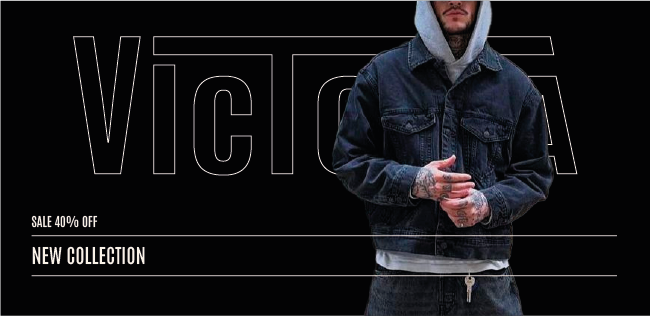
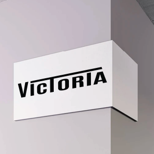
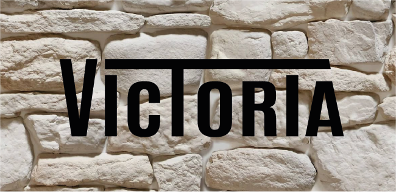
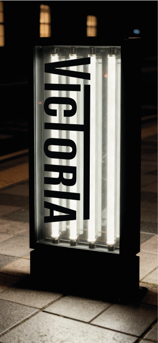
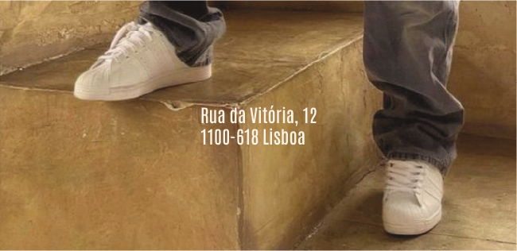
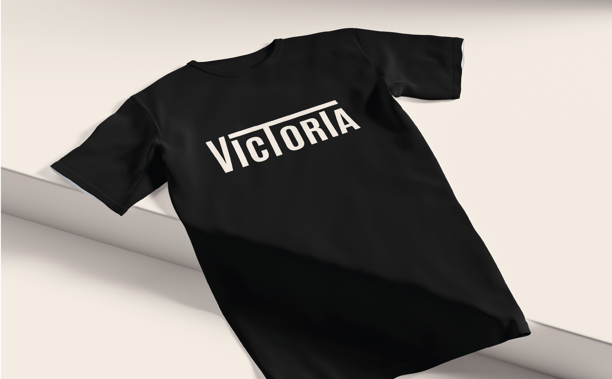
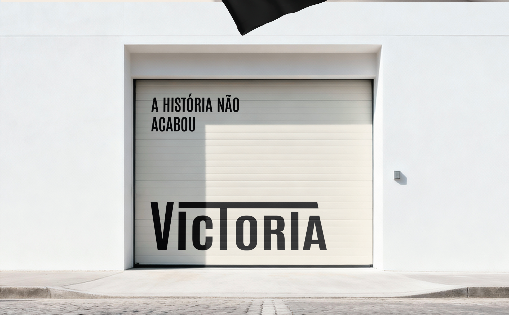
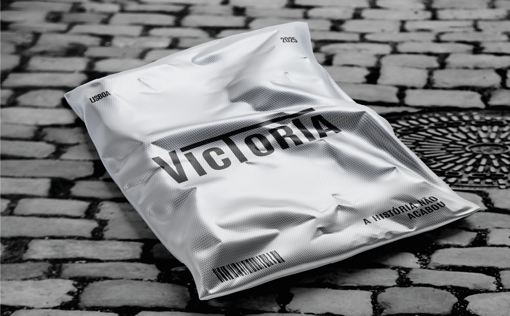

Victoria nasce da memória visual de Lisboa e da ligação entre o passado urbano e a identidade contemporânea. O projeto procura criar uma marca com presença forte, direta e facilmente reconhecível.
A identidade combina tipografia condensada, contraste elevado e uma linguagem gráfica inspirada nos transportes, fachadas e detalhes da cidade.
Sistema visual da marca Victoria





black
#000000 Pantone Black Coff white
#faf7ef Pantone 468 C

